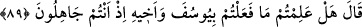
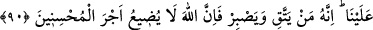

Kâşifî der ki: Yâkub (a.s.)’ın mektubunu oğulları Yûsuf (a.s.)’ın tahtının bir köşesine
koydular. Yûsuf (a.s.) mektubu okuyunca ağlamaya başladı. Kendini tutamadı ve şöyle
dedi:
89. Yûsuf dedi ki: “Siz cahil iken Yûsuf’a ve kardeşine yaptıklarınızı biliyor
musunuz?”
Yûsuf “dedi ki: “Siz cahil iken Yûsuf ’a ve kardeşine yaptıklarınızı biliyor
musunuz?” Yani yaptıklarınızın çirkin olduğunu gördükten sonra, tevbe ettiniz mi? Bu
mânâya göre âyette sorulan şey, melzum (bilmek) olduğu halde sorunun asıl murâdı
bunun lazımı (tevbe) olmuş oluyor.
Onların kardeşi Bünyamin’e yaptıkları şey, onu Yûsuf’tan ayırmış olmaları, ona türlü
eziyetlerde bulunmaları ve kendileriyle ancak acziyet ve zillet içinde konuşabilecek
derecede alçaltmış olmalarından ibarettir.
“Sizler cahil iken” onun çirkinliğini bilmiyor olduğunuz vakit, demektir. İşte bu
yüzden de onu yapmaya cür’et ettiniz. Ya da Yûsuf’un durumunun ileride varacağı,
erişeceği mertebeyi bilmiyorlardı.
Yûsuf (a.s.)’ın bu sözü ağabeylerini kınayıp azarlamak maksadıyla değil, sırf Allah’ın
hakkını kendi hakkına tercih ederek onlara karşı duyduğu şefkatten dolayı, dînî açıdan
iyiliklerini istemek ve tevbeye teşvik etmek için söylenmiş bir sözdür.
Rivâyete göre Yûsuf (a.s.), babasının mektubunu okuyunca ağladı ve ona şöyle bir
mektup yazdı:
“Rahmân ve Rahîm olan Allah’ın adıyla.
Yâkub İsraîlullah’a Mısır Meliki’nden. İmdi ey yaşlı zat, mektubun elime ulaştı. Onu
okudum ve ondaki bilgileri tüm yönleriyle öğrendim. Mektubunda sâlih atalarından ve
onların belâlara uğradıklarından bahsediyorsun. Madem ki onlar böyle belâlara
uğradıkları ve sabrettikleri için zafere erdiler, öyleyse sen de onlar gibi sabret...
Vesselam.”
Yâkub (a.s.) mektubu alıp okuyunca: “Vallahi bu, bir hükümdar mektubu değil, bir
peygamber mektubudur! Bu mektubun sahibi belki de Yûsuf’tur.” dedi.
Kâşifî der ki: “Yûsuf (a.s.) yüzünden perdeyi kaldırıp tâcını başından çıkarınca onlar
onun şekil ve şemâiline baktılar.